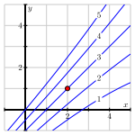

Recall that the derivative of a function a function \(f(x)\) is a measure of the instantaneous rate of change of \(f(x)\) with respect to the independent variable \(x\text{.}\) It is denoted by \(f'(x)\) or, if \(y = f(x)\text{,}\) we can also write \(\dfrac{df}{dx}\text{.}\)
Activity2.1.1.
A metal rod lying along the \(x-\)axis is heated unevenly. Assume that its temperature is a function of its distance from the origin, so that the input is given by \(x\) cm and the output, \(T(x)\text{,}\) is given in degrees Celsius. The temperature of the rod is given in the table below.
\(x\) cm
0
1
2
3
4
5
\(T(x)\dc C\)
125
128
135
160
175
160
(a)
Which expression is the best approximation to \(T'(2)\) based on the table of values?
Suppose the temperature of the rod is given by \(T(x) = x^2\text{.}\) Use the limit definition of derivative to compute \(T'(2)\text{,}\) and include proper units.
Activity2.1.2.
Suppose that the elevation (above sea level) of a certain location with latitude \(x\) and longitude \(y\) is given by the function \(f(x,y)\text{.}\) If you are standing at the indicated point, which statement best describes the (instantaneous) rate of change of \(f\text{?}\)
The elevation is increasing.
The elevation is both increasing and decreasing.
The change in elevation depends on which direction you are facing.
The eleveation is decreasing.
Activity2.1.3.
Now consider an unevenly heated plate, whose corner lies at the origin, as in the image below.
The temperature at certain points is given by the table below.
3
85
90
110
135
155
180
2
100
110
120
145
190
170
1
125
128
135
160
175
160
0
120
135
155
160
160
150
0
1
2
3
4
5
Let \(T(x,y)\) give the temperature at a point on the plate, where \(x\) and \(y\) are measured in centimeters, and \(T\) is measured in degrees celsius.
(a)
In order to make sense of the rate of change at a specific point, say \((2,1)\text{,}\) we to also specify a direction.
Which of the following expressions gives an approximation to the rate of change of \(T\) at \((2,1)\) in the \(x-\)direction?
Compare and contrast your answers to (b) and (c). What do they tell you about how the function is changing at \((2,1)\text{?}\)
Remark2.1.2.
Note that you can compute \(f_x(x,y)\) by treating \(y\) as a constant and differentiating with respect to \(x\) as you would in single variable calculus. Similarly, you can compute \(f_y(x,y)\) by treating \(x\) as a constant and differentiating with respect to \(y\text{.}\)
The concept of partial derivatives extends to functions of \(n\) variables, \(f(x_1, x_2, \ldots, x_n)\text{.}\) To compute \(f_{x_i}(x_1, x_2, \ldots, x_n)\text{,}\) you treat all variables except \(x_i\) as constants and differentiate with respect to \(x_i\text{.}\)
to denote the partial derivative of \(f\) with respect to \(x_i\) evaluated at \((a,b)\text{.}\) It’s another way to write \(f_{x_i}(a,b)\text{.}\)
Activity2.1.5.
If \(f(x,y) = 3x^3 - 2x^2y^5\text{,}\) find the partial derivatives \(f_x\) and \(f_y\text{.}\)
If \(f(x,y) = \displaystyle\frac{xy^2}{x+1}\text{,}\) find the partial derivatives \(f_x\) and \(f_y\text{.}\)
If \(g(r,s) = rs\cos(r)\text{,}\) find the partial derivatives \(g_r\) and \(g_s\text{.}\)
Assuming \(f(w,x,y) = (6w+1)\cos(3x^2+4xy^3+y)\text{,}\) find the partial derivatives \(f_w\text{,}\)\(f_x\text{,}\) and \(f_y\text{.}\)
Find all possible first-order partial derivatives of \(q(x,t,z) =
\displaystyle \frac{x2^tz^3}{1+x^2}.\)
Activity2.1.6.
Shown below in Figure 2.1.3 is a contour plot of a function \(f\text{.}\) The values of the function on a few of the contours are indicated to the left of the figure.
Figure2.1.3.A contour plot of \(f\text{.}\)
Estimate the partial derivative \(f_x(-2,-1)\text{.}\) (Hint: How can you find values of \(f\) that are of the form \(f(-2+h)\) and \(f(-2-h)\) so that you can use a symmetric difference quotient?)
Estimate the partial derivative \(f_y(-2,-1)\text{.}\)
Estimate the partial derivatives \(f_x(-1,2)\) and \(f_y(-1,2)\text{.}\)
Locate, if possible, one point \((x,y)\) where \(f_x(x,y)=
0\text{.}\)
Locate, if possible, one point \((x,y)\) where \(f_x(x,y)\lt 0\text{.}\)
Locate, if possible, one point \((x,y)\) where \(f_y(x,y)>0\text{.}\)
Suppose you have a different function \(g\text{,}\) and you know that \(g(2,2) =
4\text{,}\)\(g_x(2,2) > 0\text{,}\) and \(g_y(2,2) > 0\text{.}\) Using this information, sketch a possibility for the contour \(g(x,y)=4\) passing through \((2,2)\) on the left side of Figure 2.1.4. Then include possible contours \(g(x,y) = 3\) and \(g(x,y) = 5\text{.}\)
Figure2.1.4.Plots for contours of \(g\) and \(h\text{.}\)
Suppose you have yet another function \(h\text{,}\) and you know that \(h(2,2) =
4\text{,}\)\(h_x(2,2) \lt 0\text{,}\) and \(h_y(2,2) > 0\text{.}\) Using this information, sketch a possible contour \(h(x,y)=4\) passing through \((2,2)\) on the right side of Figure 2.1.4. Then include possible contours \(h(x,y) = 3\) and \(h(x,y) = 5\text{.}\)
A function \(f\) of two independent variables \(x\) and \(y\) has two first order partial derivatives, \(f_x\) and \(f_y\text{.}\) Each of these first-order partial derivatives has two partial derivatives, giving a total of four second-order partial derivatives:
means that we first differentiate with respect to \(x\) and then with respect to \(y\text{;}\) this can be expressed in the alternate notation \(f_{xy} = (f_x)_y\text{.}\) However, to find the second partial derivative
Be sure to note carefully the difference between Leibniz notation and subscript notation and the order in which \(x\) and \(y\) appear in each. In addition, remember that anytime we compute a partial derivative, we hold constant the variable(s) other than the one we are differentiating with respect to.
Activity2.1.7.
Find all second order partial derivatives of the following functions. For each partial derivative you calculate, state explicitly which variable is being held constant.
\(\displaystyle f(x,y) = x^2y^3\)
\(\displaystyle f(x,y) = y\cos(x)\)
\(\displaystyle g(s,t) = st^3 + s^4\)
Activity2.1.8.
Consider the function \(h(x,y,z) = 9x^9z-xyz^9 + 9\text{.}\)
(a)
How many second order partial derivatives does \(h\) have?
(b)
Find all second order partial derivatives of \(h\) and arrange them in a matrix. What do you notice?
Clairaut’s Theorem.
Let \(f\) be a function of several variables for which the partial derivatives \(f_{xy}\) and \(f_{yx}\) are continuous near the point \((a,b)\text{.}\) Then
Does there exist a function \(F(x,y)\) such that \(F_{x}(x,y) = xy\) and \(F_{y}(x,y) = \frac{x^2}{2}\text{?}\) If so, find it.
(b)
Does there exist a function \(F(x,y)\) such that \(F_{x}(x,y) = xy\) and \(F_{y}(x,y) = xy\text{?}\) If so, find it.
(c)
Does there exist a function \(F(x,y)\) such that \(F_{x}(x,y) = e^x \cos y\) and \(F_{y}(x,y) = -e^x \sin y + 2y\text{?}\) If so, find it.
Activity2.1.10.
Shown in Figure 2.1.5 is a contour plot of a function \(f\) with the values of \(f\) labeled on the contours. The point \((2,1)\) is highlighted in red.

Figure2.1.5.A contour plot of \(f(x,y)\text{.}\)
Estimate the partial derivatives \(f_x(2,1)\) and \(f_y(2,1)\text{.}\)
Determine whether the second-order partial derivative \(f_{xx}(2,1)\) is positive or negative, and explain your thinking.
Determine whether the second-order partial derivative \(f_{yy}(2,1)\) is positive or negative, and explain your thinking.
Determine whether the second-order partial derivative \(f_{xy}(2,1)\) is positive or negative, and explain your thinking.
Determine whether the second-order partial derivative \(f_{yx}(2,1)\) is positive or negative, and explain your thinking.
Consider a function \(g\) of the variables \(x\) and \(y\) for which \(g_x(2,2) > 0\) and \(g_{xx}(2,2) \lt 0\text{.}\) Sketch possible behavior of some contours around \((2,2)\text{.}\)
Consider a function \(h\) of the variables \(x\) and \(y\) for which \(h_x(2,2) > 0\) and \(h_{xy}(2,2) \lt 0\text{.}\) Sketch possible behavior of some contour lines around \((2,2)\text{.}\)